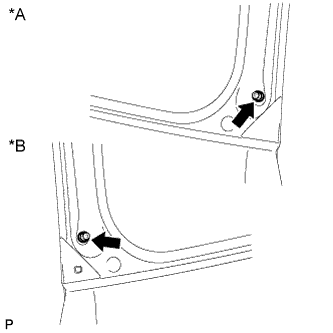
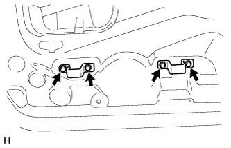

BACK DOOR > REASSEMBLY |
| 1. INSTALL LICENSE PLATE LIGHT ASSEMBLY |
Install the lights with the 2 screws.
Connect the connector.
| 2. INSTALL BACK DOOR ELECTRICAL KEY SWITCH |
Attach the 2 guides to install the back door electrical key switch.
Install the 2 screws.
Attach the clamp.
| 3. INSTALL NO. 1 BACK DOOR GARNISH RETAINER |
Install the No. 1 back door garnish retainer with the 3 screws.
| 4. INSTALL BACK DOOR OUTSIDE GARNISH SUB-ASSEMBLY |
Attach the 9 clips to install the back door outside garnish.
Install the nut.
Connect the connector.
| 5. INSTALL BACK DOOR LOWER DAMPER STAY BRACKET LH |
Bumper side:
Install a new back door check to the back door lower damper stay bracket.
Back door side:
Install the back door check to the back door lower damper stay bracket.
Check that the back door check is securely attached to the ball joint and cannot be pulled off.
| 6. INSTALL BACK DOOR CHECK |
Bumper Side:
Install the back door check with back door lower damper stay bracket with the 2 bolts labeled A.
Install the bolt labeled B.
Attach the wire harness.
Back Door Side:
 |
Attach the clip to install the back door check with back door lower damper stay bracket.
Install the 2 bolts.
| 7. INSTALL BACK DOOR GLASS |
Install the back door glass with the 4 bolts.
Attach the 2 clamps and connect the connector.
| 8. INSTALL BACK WINDOW STAY ASSEMBLY LH |
Install the 2 stop rings to the back door stay assembly.
 |
Install the back window stay assembly.
Check that the back window stay is attached to the ball joint and cannot be pulled off.
| 9. INSTALL BACK WINDOW STAY ASSEMBLY RH |
| 10. INSTALL BACK DOOR STAY BOLT |
When replacing the back door stay bolt with a new one:
Clean the threaded portion on the vehicle body with a non-residue solvent.
|  |
Install the 2 back door stay bolts.
| *A | for RH Side |
| *B | for LH Side |
When reusing the back door stay bolt:
Clean the threaded portion on the vehicle body with a non-residue solvent.
Apply adhesive to the threads of the back door stay bolt.
Install the 2 back door stay bolts.
| 11. INSTALL BACK DOOR LOCK STRIKER COVER |
Attach the 3 claws to install the lock striker cover.
| 12. INSTALL REAR WIPER MOTOR ASSEMBLY |
Attach the 2 guides and temporarily install the rear wiper motor assembly with the 3 bolts.
Tighten the 3 bolts.
Connect the connector.
| 13. INSTALL REAR WIPER ARM |
 |
Clean the wiper arm serrations.
| *1 | Wiper Arm Pivot Serrations |
Clean the wiper pivot serrations with a wire brush.
| *1 | Wiper Pivot Serrations |
| *2 | Wire Brush |
Operate the rear wiper and stop the rear wiper motor at the automatic stop position.
 |
Align the blade tip with the mark on the glass as shown in the illustration.
| Area | Standard Condition |
| a | 10.0 mm (0.394 in.) |
| b | 10.0 mm (0.394 in.) |
| *1 | Ceramic Dot |
| *a | Upper Limit |
| *b | Lower Limit |
Install the rear wiper arm with the nut.
| 14. INSTALL REAR WASHER NOZZLE SUB-ASSEMBLY |
Attach the 2 claws to install the washer nozzle.
Connect the hose.
| 15. INSTALL REAR SPOILER SUB-ASSEMBLY |
Attach the 3 clips to install the rear spoiler.
Install the 6 bolts.
Connect the connector.
| 16. INSTALL REAR SPOILER COVER RH |
Attach the 2 clips to install the rear spoiler cover.
| 17. INSTALL REAR NO. 1 SPOILER COVER |
Attach the 5 clips and fastening tape to install the rear No. 1 spoiler cover.
| 18. INSTALL BACK WINDOW LOCK ASSEMBLY |
Install the back window lock assembly with the 3 bolts.
Connect the connector.
| 19. INSTALL BACK DOOR PANEL CUSHION |
Install the 4 back door panel cushions.
| 20. INSTALL BACK DOOR NO. 1 STOPPER |
Attach the 2 claws to install a new back door No. 1 stopper.
| 21. INSTALL BACK DOOR NO. 2 STOPPER CUSHION |
Attach the claw to install the back door No. 2 stopper cushion.
| 22. INSTALL BACK DOOR SIDE FEMALE STOPPER SUB-ASSEMBLY LH |
 |
Install the back door side female stopper sub-assembly with the 2 bolts.
| 23. INSTALL NO. 2 BACK DOOR WEATHERSTRIP |
 |
Align the alignment mark on the weatherstrip with the protruding portion on the body indicated by the arrow in the illustration and install the No. 2 back door weatherstrip.
| *1 | Joint of Weatherstrip |
| *2 | Paint Mark (White) |
| *3 | Paint Mark (Light Blue) |
| 24. INSTALL SWITCH COVER |
Install the switch cover.
| 25. INSTALL GLASS HATCH OPENER SWITCH ASSEMBLY |
Install the opener switch with the screw.
| 26. INSTALL LOWER BACK DOOR GARNISH SUB-ASSEMBLY OUTSIDE LH |
Clean the vehicle body surface.
Using a heat light, heat the vehicle body surface.
Wipe off any tape with cleaner.
Install a new outside garnish.
Using a heat light, heat the vehicle body and garnish.
Remove the peeling paper from the face of the outside garnish.
Attach the 5 claws to install the garnish.
Install the screw.
Attach the clamp and connect the connector.
| 27. INSTALL LOWER BACK DOOR GARNISH SUB-ASSEMBLY OUTSIDE RH |
Clean the vehicle body surface.
Using a heat light, heat the vehicle body surface.
| Item | Temperature |
| Vehicle body | 40 to 60°C (104 to 140°F) |
Wipe off any tape adhesive residue with cleaner.
Install a new rear lower back door garnish sub-assembly outside RH.
Using a heat light, heat the vehicle body and a new rear lower back door garnish sub-assembly outside RH.
Remove the release paper from the face of the rear lower back door garnish sub-assembly outside RH.
Attach the 4 claws to install the rear lower back door garnish sub-assembly outside RH, and then install the screw.
| 28. INSTALL LOWER BACK DOOR OUTSIDE GARNISH MOULDING LH |
Attach the 4 claws to install the outside garnish moulding.
| 29. INSTALL LOWER BACK DOOR OUTSIDE GARNISH MOULDING RH |
Attach the 5 claws to install the lower back door outside garnish moulding RH.
| 30. INSTALL REAR TELEVISION CAMERA ASSEMBLY |
Install the rear television camera with the 2 bolts.
Connect the connector.
| 31. INSTALL BACK DOOR OUTSIDE HANDLE LH |
Install the back door outside handle with the 2 nuts.
| 32. INSTALL BACK DOOR LOCK CONTROL CABLE ASSEMBLY |
Install the cable.
| 33. INSTALL BACK DOOR LOCK ASSEMBLY |
Connect the cable.
Install a new door lock wiring harness seal to the front door lock assembly.
Using a T30 "TORX" wrench, install the back door lock assembly with the 3 screws.
Connect the connector.
| 34. INSTALL BACK DOOR SERVICE HOLE COVER |
 |
Apply new butyl tape to the back door panel.
Attach the rear door service hole cover using to the reference points on the rear door panel.
| *1 | Reference Point |
| 35. INSTALL TOOL BOX BRACKET |
|  |
Install the 2 tool box brackets with the 4 bolts.
| 36. INSTALL BACK DOOR TRIM PANEL ASSEMBLY |
Attach the 15 clips to install the back door trim panel assembly.
Install the bolt.
Install the screw.
Attach the claw to install the cover.
| 37. INSTALL BACK DOOR LOCK COVER |
Attach the 6 claws to install the back door lock cover.
| 38. INSTALL TOOL CASE |
Attach the 2 claws to install the tool case.
| 39. INSTALL UPPER TOOL BOX PANEL SUB-ASSEMBLY |
Attach the 3 claws.
Install the upper tool box panel sub-assembly as shown in the illustration.
| 40. INSTALL BACK DOOR TRIM COVER |
 |
Attach the 4 claws.
Install the back door trim cover as shown in the illustration.
| 41. INSTALL BACK DOOR SIDE GARNISH LH |
Attach the 2 clips and claw to install the back door side garnish.
| 42. INSTALL BACK DOOR SIDE GARNISH RH |
Attach the 2 clips and claw to install the back door side garnish.
| 43. INSTALL BACK DOOR CENTER GARNISH |
Attach the 4 clips to install the back door center garnish.